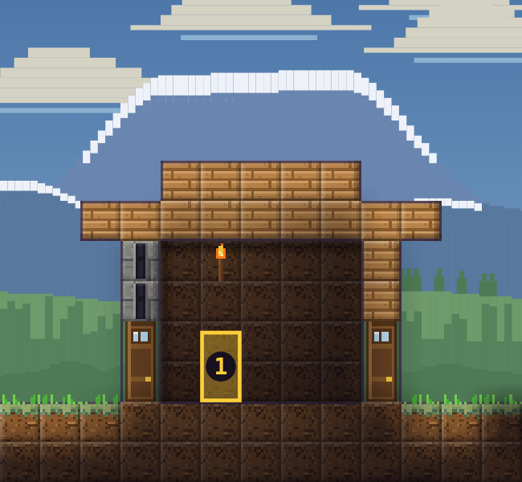

Wooden hut
Wooden hut: A small log hut with a door and a torch. 1 defense post.
Where soldiers stand
Gold boxes mark the 1 post, numbered as in the Buildings window. Station a soldier from your party at a post and they stay there and fight anything that comes close. Archers and mages shoot through the arrow slits beside their post and from the roof, up to 22 blocks away and far below them; a guard on the far side of a building cannot see through it.

| Post | Floor | Side |
|---|---|---|
| 1 | Ground floor | Left |
How it looks as your village grows
Buildings you build follow your village's size, like the castle:
| Village size | Built of |
|---|---|
| Hamlet | Wood: planks, timber beams, thatch roofs |
| Town | Stone: castle stone, stone brick beams, tiled roofs |
| City | Iron: riveted iron plates, iron beams, iron roofs |